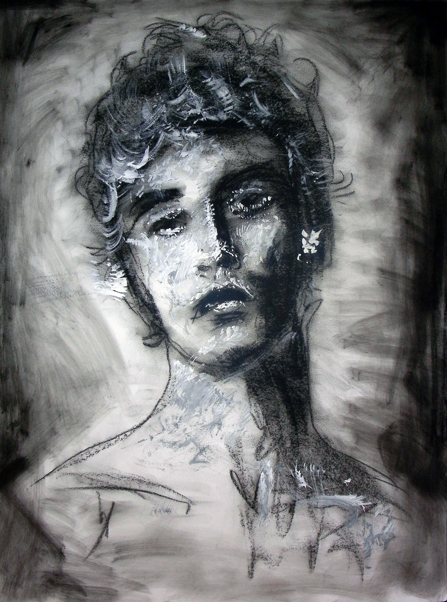
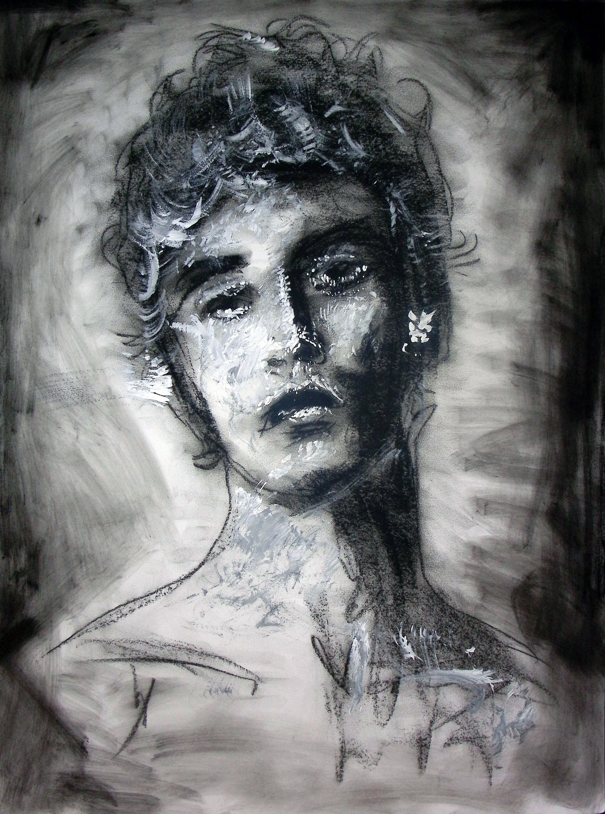

← Back to work
Expressive Portraits
A series of mixed media portraits exploring expression and character.
- Medium
- Mixed Media on Paper
- Year
- 2023
- Format
- Series
 

Intent
This series uses portraiture as a framework to explore fragmentation and psychological tension. Rather than focusing on strict likeness, materials such as charcoal, graphite, acrylic, and collage are layered to create symbolic marks, structural interruptions, and mixed media elements that suggest themes of concealment, spiritual conflict, and transformation. The portraits balance realism and disruption, allowing the human figure to become both subject and surface for internal narrative.
Process
- Each piece began with a rapid charcoal gesture to establish form and energy. I then layered acrylic, pastel, graphite, and occasional collage, allowing materials to overlap, obscure, and interrupt one another. Rather than polishing the surface, I preserved visible revisions and marks, letting accumulation and erasure shape the final image. The process emphasized immediacy and tension between structure and fragmentation.